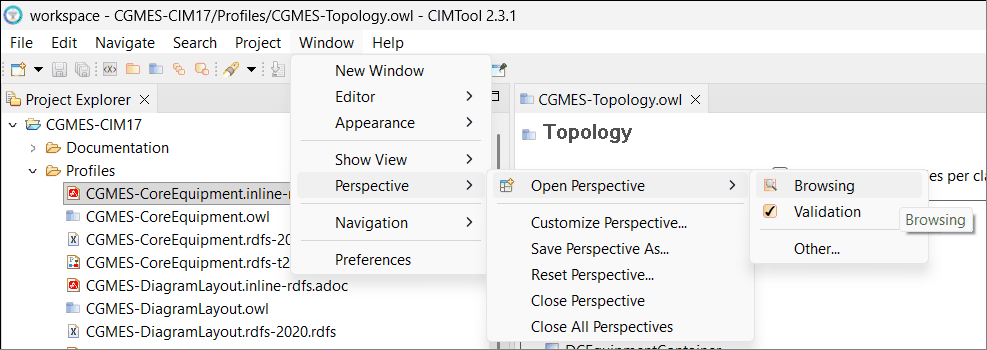
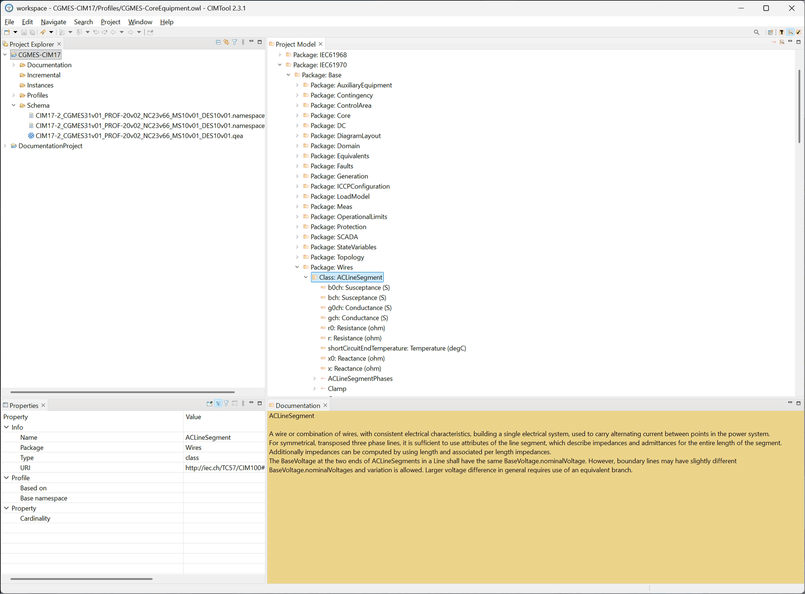
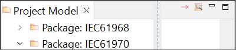
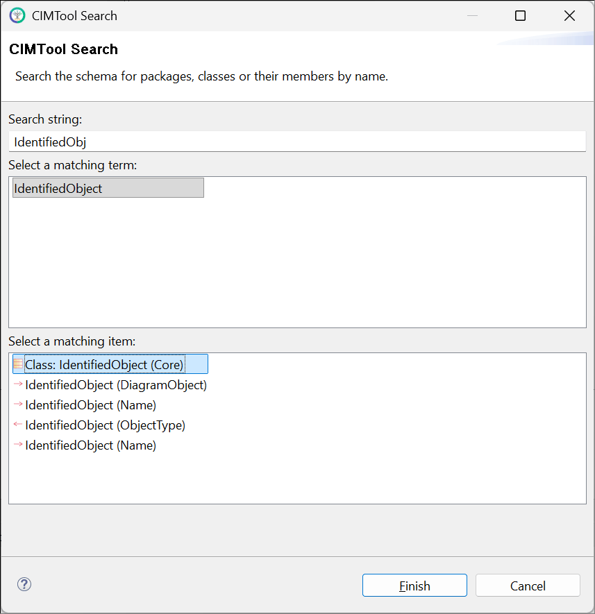

Project Model: Browsing the CIM
CIMTool provides a perspective (a window layout) for browsing the CIM. It is sometimes more convenient than a UML editor for browsing, especially if the UML diagrams are not complete, and it gives quick ways to search the CIM and to follow associations through it.
If this is the first time you have used CIMTool, you need to create a project or load an existing one first. The easiest way is to follow the instructions in Exchanging CIMTool Projects.
Opening the Browsing Perspective
With a project loaded, choose Window > Perspective > Open Perspective > Browsing:

Choosing Browsing switches the perspective to:

The Browsing perspective with the class ACLineSegment selected in the Project Model.
- The Project Explorer (top left) shows your projects and their contents. To browse a project's CIM, select the project or any file in it. The first time a project is selected, its CIM is analyzed in the background, which typically takes around 10 seconds.
- The Project Model view (top right) is the center of browsing. It shows the project's schema as a tree of packages, classes and their members. If the project's Schema folder holds extension schemas as well as the CIM, they are merged into the one tree. The tree is rebuilt when a schema is imported again. For CIMTool's interpretation of the CIM and the icons used in this view, see UMLOWL.
- The Properties view (bottom left) and the Documentation view (bottom right) show the details and the CIM description of the selected item.
If the perspective doesn't look like this, choose Window > Perspective > Reset Perspective... to restore its layout.
Jump and Search
The Jump and  Search buttons are at the top right of the Project Model view:
Search buttons are at the top right of the Project Model view:

The Jump button moves the selection along whatever is selected, which is useful for following chains of associations through the CIM:
- On an association end, it moves to the other end of the association.
- On an attribute, it moves to the attribute's type. For example, jumping from r: Resistance (ohm) selects the Resistance datatype.
- On a SuperClass: entry, it moves to the parent class.
As a shortcut, double-click an item in the Project Model view to jump from it.
The Search button opens the search wizard, which finds packages, classes and their members in the CIM by name, lists the matches, and selects the one you choose in the Project Model view:

The search wizard opened from the Project Model view. Choosing Finish selects the chosen item in the Project Model.
See Searching Schemas and Profiles for more about search.
Following the Selection
The Project Model and Documentation views follow what you select anywhere in the workbench, not only in the Browsing perspective:
- Selecting a project, or a file in it, in the Project Explorer switches both views to that project's schema.
- Selecting a class or property in a profile editor, on its Add/Remove tab or in the Outline view, expands the Project Model to that item's definition in the CIM, and the Documentation view shows its description.
This makes the two views a handy companion while you build a profile: keep them open beside the profile editor, and every class you consider on the Add/Remove tab is shown in the context of the CIM.
Opening a Profile From the Browsing Perspective
Double-clicking a profile in the Project Explorer opens its editor in the middle of the window, between the two columns. The Project Model and Documentation views narrow to make room and follow your selections in the editor. When you close the last editor, the window returns to its two-column layout.